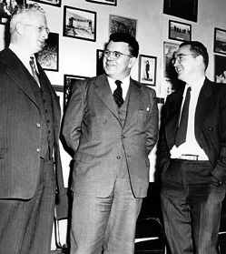
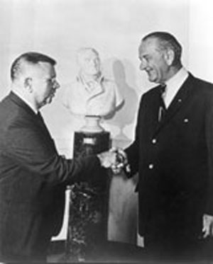

"Ed" Condon naît le à Alamogordo (Nouveau-Mexique).
Il fait partie de ces jeunes scientifiques qui vont en pélerinage en à Gottingen et Munich et
comprend vite la signification et la puissance de la nouvelle théorie des quantas. De retour de Gottingen, il
travaille un court moment comme chargé des relations publiques pour les laboratoires Bell, fait des conférences à l'université de Columbia, puis démarre
une carrière académique qui l'emène jusqu'à l'université de Princeton
(Minnesota). Là, il publie divers travaux (le premier texte anglais sur la mécanique quantique avec Philip M. Morse en
, Théorie du Spectre Atomique avec G. Shortley en ) et continue à enseigner
(notamment à l'élève Frederick Seitz) jusqu'en 1937, où il quitte Princeton pour un poste de Directeur Adjoint des Recherches à
Westinghouse, qu'il va faire entrer dans l'âge du nucléaire. Le magazine Time le qualifie même de Roi du
Monde Atomique.
Puis la guerre arrive. Il met alors ses compétences au service de la nation en travaillant pour le NDRC et le projet Manhattan. Il ne
sera pas à Alamogordo, son lieu de naissance, lors de l'explosion de Trinity sur la
petite ville du Nouveau-Mexique.
Après la guerre, Condon est président de l'APS et conseiller scientifique pour le
sénateur Brian McMahon, président du comité spécial du Sénat sur l'énergie atomique. McMahon milite pour le contrôle
civil du programme des armes nucléaires et reçoit en ce sens le plein soutien de Condon, qui considère ce contrôle
civil indispensable pour éviter une guerre nucléaire.
NBS

Donald Howard Menzel, Condon et Walt Roberts partagent un moment de détente
le 5 mars 1950
A la même époque il quitte Westinghouse pour prendre la direction du NBS, dont il
fonde notamment les laboratoires de Boulder (Colorado). Mais très rapidement, et
probablement en raison de ses positions sur le contrôle civil de l'armement nucléaire, il est victime d'attaques de
l'HUAC et de son président membre de Congrès J. Parnell
Thomas, qui indiquent dans un rapport le qu'il semble que le docteur Condon soit l'un des
maillons les plus faibles de notre sécurité atomique. Encore et encore, son accréditation est moult fois
révisée, suspendue par le Secrétaire de la Marine, puis re-attribuée, pour être
réexaminée à nouveau. Parmi ses détracteurs figure le Vice-Président Richard Milhous Nixon, également membre de l'HUAC. En , Il est finalement
blanchi, Thomas à la prison de Danbury, mais est convaincu de recevoir des dessous-de-table du personnel de son
équipe. Il quitte alors le gouvernement, le NBS, et prend la tête du département de
Recherche et Développement de Corning Glass Works. En , la Marine
lui redonne son accréditation dans le cadre d'un contrat de recherche chez Corning pour le gouvernement.
Il retourne ensuite vers l'enseignement, 2 ans à Oberlin et 7 ans à l'Université de Washington, pour enfin revenir à Boulder (Colorado), en tant que
professeur de physique et chargé de cours pour le JILA. Son accréditation est discrètement rétablie, le
blanchissant une nouvelle fois. A cette époque en 1964, il est même président de l'Association des Enseignants en
Physique (Association of Physics Teachers).
Projet Colorado
Condon, invité par le Lyndon Baines Johnson à la Maison Blanche le
pour marquer le 20ème anniversaire de l'acte McMahon, dont Condon a fait campagne pour le passage Physics Today

Dès le début des travaux du projet, Condon déclare :
Je tiendrais à recommander dès maintenant que le gouvernement abandonne l'affaire. Je suis, quant à moi, persuadé
qu'il n'y a rien là-dedans. Mais je ne suis pas censé déposer mes conclusions avant 1 an encore. Peut-être que
l'étude des phénomènes d'ovnis pourrait être valable pour les groupes qui s'intéressent aux phénomènes
météorologiques.
Le , Condon visite le NPIC avec d'autres membres du
projet "Visit of Dr. Condon to NPIC,
20 February 1967", Memorandum for the record, CIA, 1967-02-23, en vue d'une collaboration sur le
projet pour les analyses de photos. Le 5 mai, Condon assiste à nouveau, avec des membres de son équipe comme Robert J. Low et William K. Hartmann, ainsi que J. Thomas Ratchford (USAF), le Dr. Charles Reed (NRC) et de
personnel de la CIA à un briefing de Everitt Merritt sur l'analyse photogrammétrique que
celui-ci a menée sur un cas d'ovni. Condon et son groupe sont impressionnés, au point que des arrangements
préliminaires sont passés qu'un contrat permette à Merritt de mener une analyse du projet du Colorado. Il est entendu que cette personne
inconnue soumettra son rapport sur l'analyse de la
photographie de Zanesville par certains canaux de façon à garder ouverts entre le NPIC de la CIA et Condon
"UFO Briefing for
Dr. Edward Condon, 5 May
1967", Memorandum for the record, CIA, 1967-05-08 < Sturrock, P. A.: "An
Analysis of the Condon Report on the Colorado UFO Project", Stanford University Institute for Plasma
Research (SUIPR) Report n° 599, 1974-10.
Alors que Mstislav V. Keldysh est président de l'Académie de Sciences russes, le New
York Times annonce en que l'URSS établit un projet
gouvernemental pour étudier les ovnis. Seitz écrit alors le à Keldysh, incluant en
attachement une lettre de Condon pour Felix Y. Zigel. Les américains déclareront n'avoir
reçu aucune réponse, malgré leurs relances Blue Book. De fait, c'est dès
que la dissolution prochaine du Comité Stolyarof est
annoncée.
Suite au scandale du mémo Low, James E. McDonald vocifère sur Condon, mais commet
l'erreur de donner les noms de ses indicateurs : David R. Saunders et Norman E. Levine, que Condon convoque, et renvoie du projet le .
Restez calme, Dr. Condon — dites-leur simplement que vous ne croyez pas en eux !Oliphant, Denver Post
Attaqué de toutes parts, après une déclaration de Josef Allen Hynek le
, Condon perd son sang froid et déclare :
Ceux qui édictent des livres sur l'ufologie et les enseignants qui permettent à leur élèves de s'intéresser à
cette pseudo-science devraient être fouettés en place publique et bannis à jamais de leur profession.